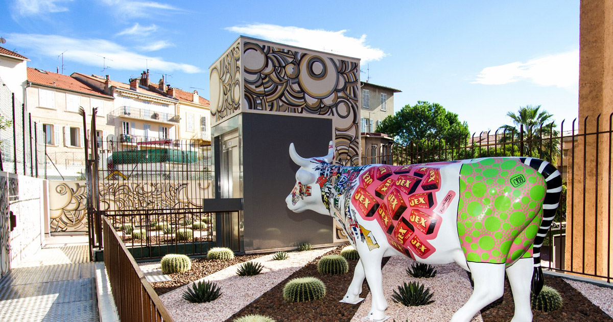
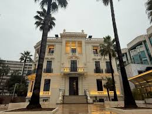

Points d'intérêt
Le Palais des Festivals
Description en français :La première édition du Festival de Cannes, en 1939, ayant été annulée, celle de 1946 est la première à s'être effectivement tenue, organisée au Casino municipal de Cannes dans l'attente de la démolition du Cercle nautique, sis 49-50 boulevard de la Croisette, sur le site où doit être érigé le Palais des Festivals dit Palais Croisette. Les éditions suivantes, de 1947 à 1982, se tiennent au Palais Croisette.u sud du palais, l'esplanade et la rotonde Riviera sont aménagés en 19993.
Description in English:The first edition of the Cannes Film Festival, in 1939, having been canceled, that of 1946 was the first to actually be held, organized at the Cannes Municipal Casino pending the demolition of the Cercle Nautique, located 49-50 boulevard de la Croisette, on the site where the Palais des Festivals known as Palais Croisette was to be erected. The following editions, from 1947 to 1982, were held at the Palais Croisette. To the south of the palace, the esplanade and the Riviera rotunda were developed in 19993.
Boulevard de la Croisette
Description en français :La Croisette est une voie de Cannes, constituée du boulevard et de la promenade du même nom qui longe les plages de sable blanc face à la baie de Cannes. Bordée de nombreux hôtels, commerces de luxe et résidences de villégiature, c'est un haut lieu de l'événementiel et du tourisme sur la Côte d'Azur.Le boulevard3, d'une longueur de 2,650 km4, commence dans le quartier Centre-Croisette à la suite du boulevard de la Pantiero5 et se termine Place Franklin-Roosevelt dans le quartier de la Pointe Croisette6.
Description in English:La Croisette is a road in Cannes, made up of the boulevard and the promenade of the same name which runs along the white sand beaches facing the bay of Cannes. Lined with numerous hotels, luxury shops and holiday residences, it is a hotspot for events and tourism on the Côte d'Azur. The boulevard3, with a length of 2,650 km4, begins in the Centre-Croisette district following Boulevard de la Pantiero5 and ends at Place Franklin-Roosevelt in the Pointe Croisette district6.
Les îles de Lérins
Description en français :Les îles de Lérins forment un archipel français situé en Méditerranée, dans le département des Alpes-Maritimes en région Provence-Alpes-Côte d'Azur, sur la Côte d'Azur.
Description in English: The Lérins Islands form a French archipelago located in the Mediterranean, in the Alpes-Maritimes department in the Provence-Alpes-Côte d'Azur region, on the French Riviera.
Lieux artistiques
Musée du Masque de Fer et du Fort Royal. MUSÉE
Description en français :Le musée s'appelait à l'origine musée de la Mer, mais il a changé de nom à partir de 2020, devenant le musée du Masque de fer et du Fort Royal. Ce Musée de France est un musée archéologique explorant terre et mer.
Description in English:The museum was originally called the Museum of the Sea, but it changed its name from 2020, becoming the Museum of the Iron Mask and the Fort Royal. This Museum of France is an archaeological museum exploring land and sea.
Espace Miramar
Description en français :L’Espace Miramar, situé à l'angle de la rue Pasteur et du boulevard de la Croisette, accueille chaque année des expositions temporaires tournées vers la photographie et les arts plastiques.
Description in English:Espace Miramar, located at the corner of rue Pasteur and boulevard de la Croisette, hosts temporary exhibitions each year focusing on photography and the visual arts.
La Malmaison
Description en français :La villa est construite sur l'emplacement de l'ancienne maison Daver sur la Croisette en 1863 sur les plans du grassois Marius Blond, architecte du Grand Hôtel pour abriter l'annexe de l'établissement cannois érigé la même année.
Description in English:The villa was built on the site of the former Daver house on the Croisette in 1863 to the plans of Grasse Marius Blond, architect of the Grand Hôtel to house the annex of the Cannes establishment erected the same year5.